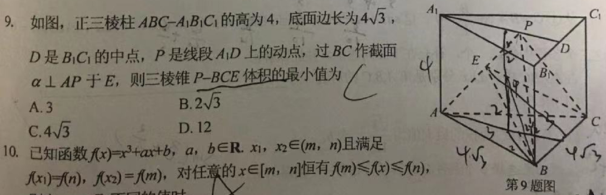

标题一共六级选
文字加粗一行显
由大到小依次减
从重到轻随之变
语法规范书写后
具体效果刷新见
李开复，1961年12月3日出生于台湾省新北市中和区，祖籍四川成都，现已移居北京市。
李开复曾就读于卡内基梅隆大学，获计算机科学博士学位，后担任副教授。
他是一位信息产业的经理人、创业者和电脑科学的研究者。曾在苹果、SGI、微软和Google等多家IT公司担当要职。2009年9月从谷歌离职后创办创新工场，并任董事长兼首席执行官。
2013年9月，李开复对外宣布罹患淋巴癌。2013年10月21日称最近化疗后身体检查结果有几项指数未降反升，需要更加严格的遵照医嘱，专注于治疗和休养。不得不大幅度减少在社交媒体上的时间。2015年2月13日，据创新工场联合创始人王肇辉的朋友圈状态显示，李开复在患病离开北京17个月后回到了创新工场的北京办公室，与员工进行交流。2015年11月6日，由李开复创办的创新工场(北京)企业管理股份有限公司于今日在股转系统披露公开转让说明书，正式冲刺新三板。
2018年12月，入选"中国改革开放海归40年40人"榜单。
人物经历
家庭身世
李开复，生于中国台湾省台北县中和乡南势角（今新北市中和区），
台湾人，父亲李天民是中华民国第一届立法委员。曾任教于黄埔军校成都分校以及国立政治大学历史系，解放前担任三青团县团部干事，曾经管理过渣滓洞。后是台湾政治大学历史系教授，母亲王雅清为辽北人。
早年经历
1966年，李开复在台湾就读小学，1972年，李开复跟随哥哥至美国田纳西州橡树岭就读初中、高中，1983年从哥伦比亚大学计
算机科学系毕业，1988年获得卡内基梅隆大学计算机系博士，当年被《商业周刊》授予“最重要科学创新奖”。
李开复卡内基梅隆大学计算机学博士毕业后，在该校担任assistant professor （即助理教授，李开复在中文自传中则将其翻译为副教授，引起巨大争议。实际上assistant professor 是助理教授，associate professor 才是副教授）两年。
1990年到1996年，李开复在美国苹果电脑公司历任语音组经理、多媒体实验室主任、互动多媒体部全球副总裁等职位。
1996年到1998年，李开复在美国硅谷图形公司SGI电脑公司担任互联网部门副总裁兼总经理、Cosmo软件公司总裁，负责多平台、互联网三维图形和多媒体软件的研发工作。
我是jiacuwenzi
我是jiacu>wenzi
woshiqingxiewenzi
woshiqingxiewenzi
wsshanchuxian
wsshanchuxian
wsxiahuaxian
wsxiahuaxian
我是一个div，我独占一行
我是一个div，我独占一行
百度
新浪
搜狐
图像标签的使用：

alt 替换文本 图像显示不出来的时候用的文字

title 提示文本 鼠标放到图像上提示的文字
title 提示文本 鼠标放到图像上提示的文字
width 设置图像宽度
height 设置图像高度
border 设置图像边框